Press Space.
See what's inside.
Spyglass gives Quick Look proper previews for Markdown, code, notebooks, archives, apps and Google Drive files. Free for 7 days.
brew install --cask magicelk235/magicelklabs/spyglass
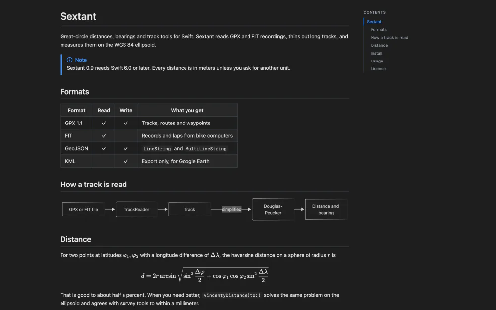
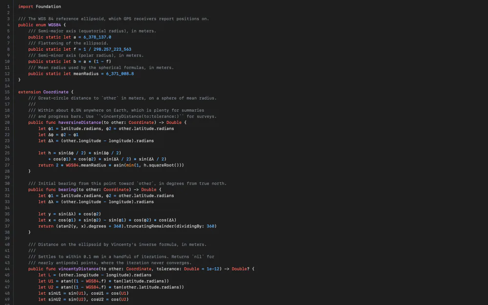
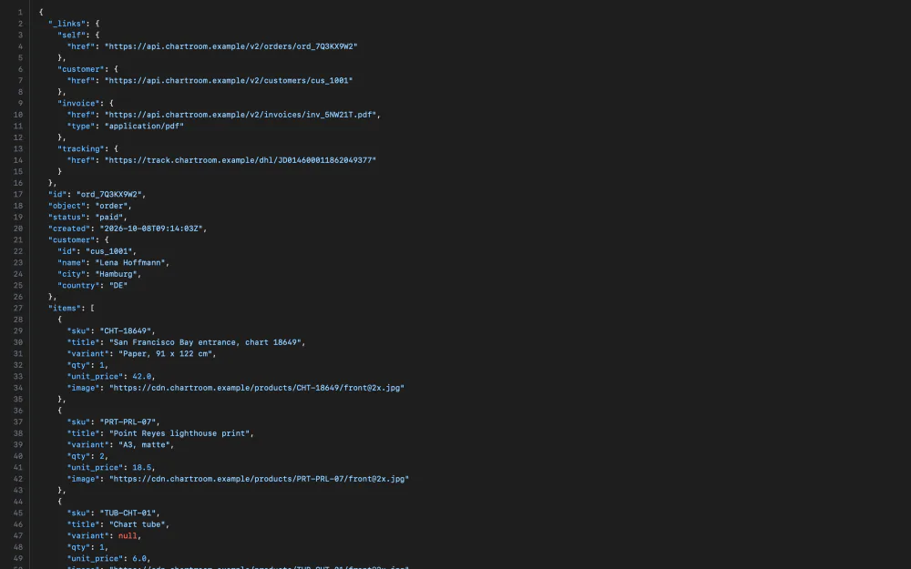
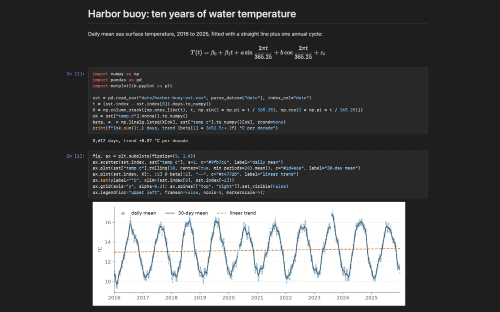
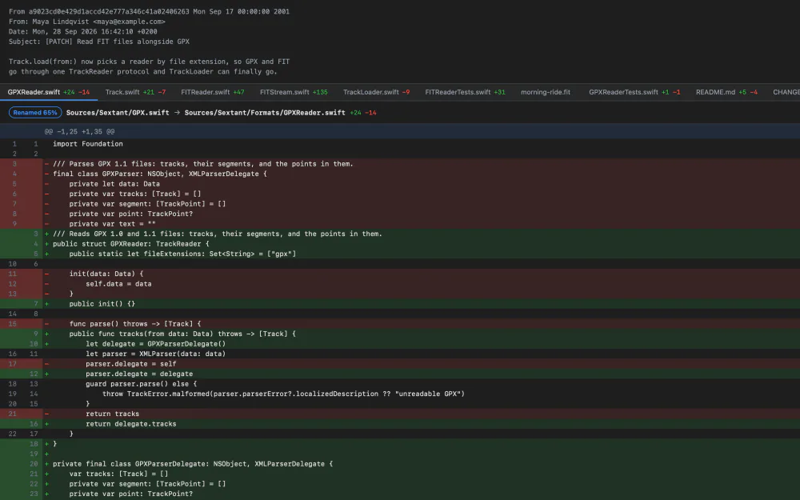
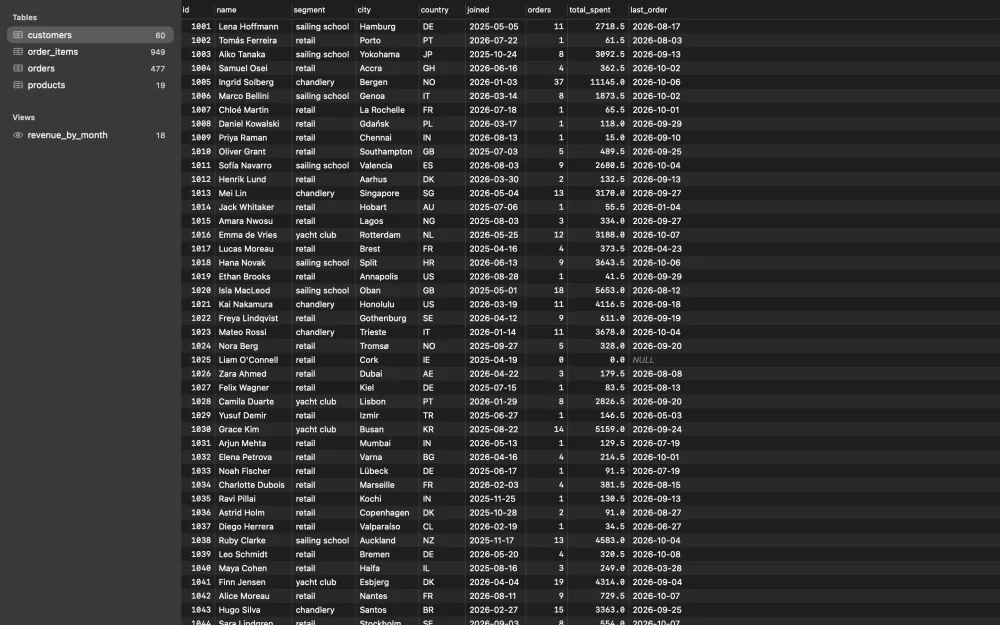
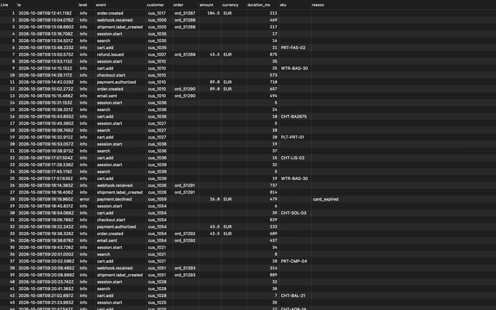
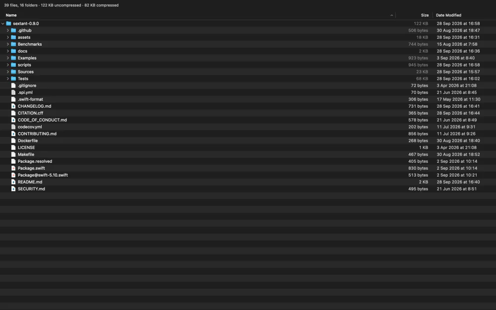
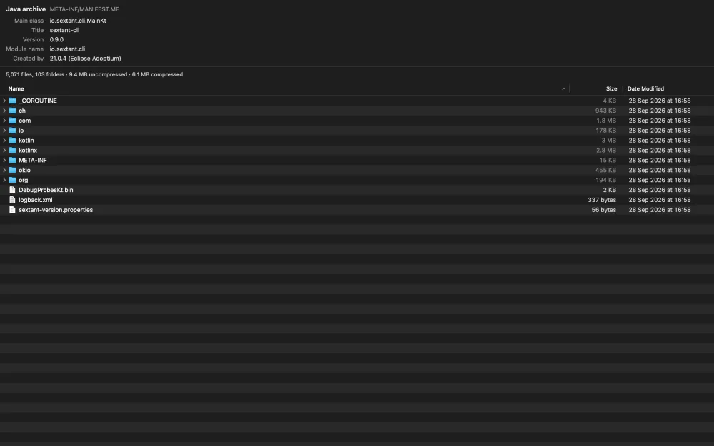
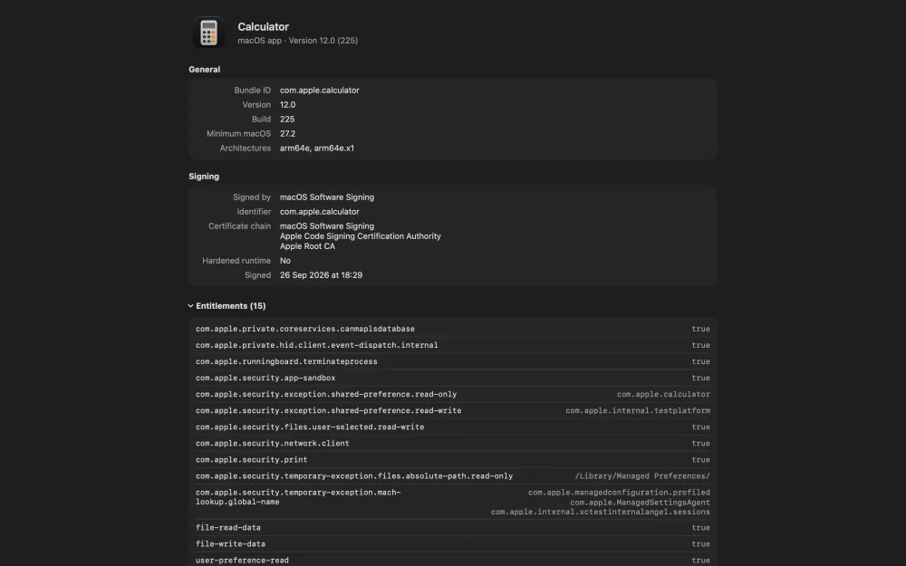
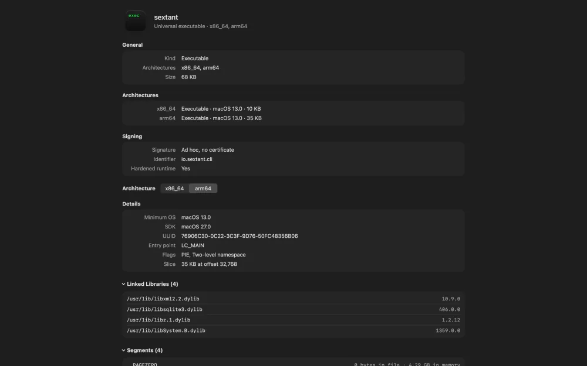
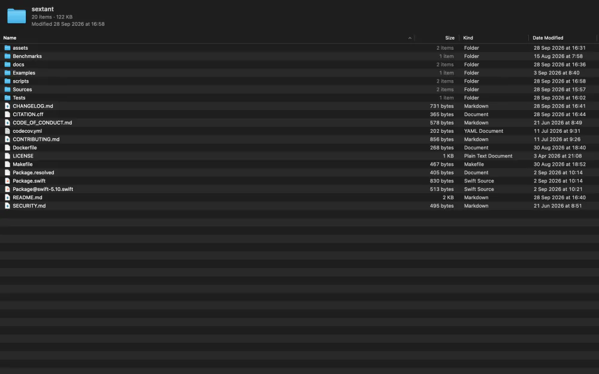
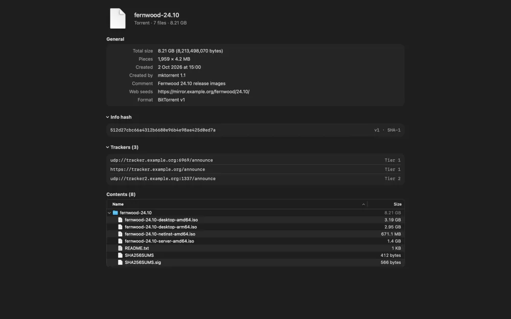
What it previews
Markdown
.md .markdown .mdx
Rendered the way GitHub shows it, with tables, task lists, footnotes, alerts, math and Mermaid diagrams. Images next to the file show up, and wide windows get a table of contents.
Source code
.swift .py .ts .go .rs .c and more
Around 190 languages, highlighted, with line numbers. Scripts without an extension are recognized by their shebang line, and Makefiles work too.
JSON, XML and friends
.json .xml .plist .yaml .toml .mobileconfig
Minified JSON comes out indented, keys in their original order. Binary plists show as XML, and signed configuration profiles are unwrapped first.
Notebooks
.ipynb
Jupyter notebooks show their markdown cells, highlighted code, plots, HTML tables, LaTeX and colored error tracebacks.
Diffs
.diff .patch
Colored hunks with a tab for each file, and badges for files that were renamed, added or deleted.
SQLite
.sqlite .db
Every table and view with its column types, showing the first 500 rows of each.
Tables
.tsv .jsonl .ndjson
TSV and JSON Lines files open as a table you can sort, up to the first 10,000 rows.
Archives
.zip .tar .gz .tgz .bz2 .xz .iso
See the file tree inside zip, tar, gzip, bzip2 and xz archives and ISO images without extracting anything.
Packages
.jar .war .apk .aab .whl .nupkg .vsix .xpi
Java, Android, Python, NuGet, VS Code and Firefox packages list their files, with the package name and version on top.
Apps and installers
.app .ipa .pkg .dmg .framework
Version, bundle ID, code signature and entitlements. An .ipa also shows its provisioning profile.
Binaries
Mach-O, .dylib .o .a, ELF
Architectures, minimum macOS, linked libraries and signing for executables, dylibs, object files and static libraries. ELF files get the basics.
Folders
any folder
A Finder-style list with icons, plus how many items it holds and their total size.
Torrents
.torrent
The file list, trackers, piece size and info hash.
Google Drive
.gdoc .gsheet .gslides .gdraw .gform .gsite .webloc
A free card with the title, owner and a link to open it. On the Drive plan, Docs, Sheets, Slides and Drawings show the document itself, and Forms and Sites keep the card.
Left to Apple
.csv .txt
macOS doesn't hand CSV or plain text files to extensions, so those keep Apple's own preview.
Google Docs, Sheets and Slides, right in Quick Look.
Google Drive for desktop fills Finder with .gdoc and .gsheet shortcuts, and Quick Look shows each one as a few lines of JSON. Spyglass shows you something you can read instead.
Free: a card you can open
The title, the owner and a button that opens the file in your browser. It works offline, needs no Google sign-in, and stays free after the trial.
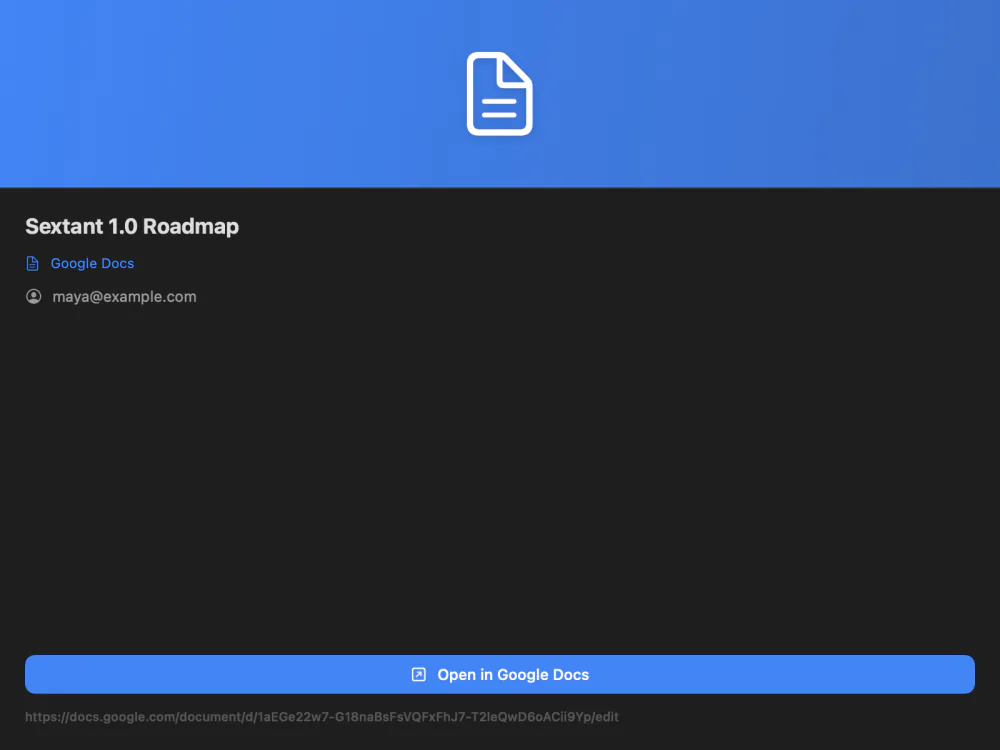
Drive plan: the document itself
Spyglass fetches Docs, Sheets, Slides and Drawings from your Drive, read-only, and draws them in Quick Look. The first page also becomes the file's thumbnail in Finder. Forms and Sites keep the free card.
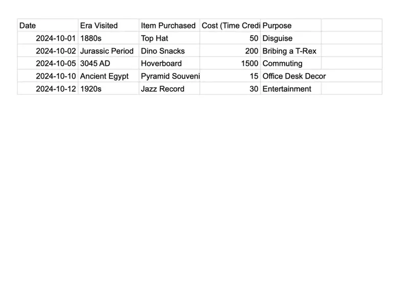
Leave it open while you work.
Live reload
Keep a preview open and save the file in your editor. The preview redraws with the change.
Light, dark or system
Previews follow your Mac's appearance, or stay light or dark if you'd rather. Code gets its own font size.
Your pick of formats
Settings has a switch for every kind of file, so you can turn off any format you don't want Spyglass to handle.
Your files stay on your Mac.
Every format preview is made on your Mac, and none of them touch the network.
Spyglass reads a folder's contents, or the images next to a Markdown file, only to draw the preview in front of you.
The Drive plan signs in with read-only access to fetch your own documents. The token lives in your Keychain, and signing out revokes it.
Spyglass has no server. It tallies previews per format on your Mac, and only when you press Buy does the checkout link carry a few of those counts. File names never leave your Mac. The privacy policy has the details.
Free for a week. $12 to keep it.
Free trial
Pro
Pro + Drive
or $36 a year
Bought Spyglass 1.0? Your key now unlocks Pro + Drive for life, at no charge.
Questions
Which Macs does it run on?
Any Mac running macOS 14 Sonoma or later.
How does the free trial work?
The 7 days start the first time you open Spyglass, and every format preview works during that week. You don't need a card or an account.
When the week is up, those files fall back to plain text or a short file summary with a note, until you add a license. Google Drive cards stay free either way.
How do I activate my license?
Your Gumroad receipt has a license key in it. Click the Spyglass icon in the menu bar, paste the key and click Unlock. The same key works on each of your Macs.
I bought Spyglass 1.0. What do I get?
Pro + Drive, free, for life. Your 1.0 key keeps working in 2.0 and unlocks every format preview along with the rendered Google Drive previews. If Spyglass ever asks for it, paste the key from your original receipt.
What happens if I cancel Pro + Drive?
You can cancel from your Gumroad receipt whenever you like, and everything keeps working until the end of the period you've paid for. After that, Drive files go back to the free card, and format previews need a Pro license.
Why do CSV and .txt files look the same as before?
macOS keeps those two types for its own preview and never passes them to a Quick Look extension, so no app can take them over. TSV and JSON Lines files do get Spyglass's table view.
Space still shows the old preview. What's wrong?
First, check that Spyglass is in your Applications folder and that you've opened it once. If another Quick Look app is installed, it may be handling the same file types, and macOS only uses one extension per type.
On macOS 15 or later, open System Settings → General → Login Items & Extensions, find Quick Look under Extensions and turn off the other app's extension. On macOS 14 the same list is under System Settings → Privacy & Security → Extensions → Quick Look.